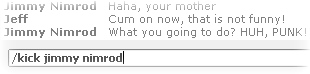
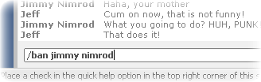

|
Kicking a Platform
with SynthMark XP. See Also: Calling Commands & Voting,
Kicking VS Banning, Back to
Main. When to Kick a Person: If you find that someone in your current chat room is causing
trouble, swearing and making a general nuisance of them selves, you can
decide to kick this person. Now if you are a server and you call the kick
command on that person. He or she will be removed from the server instantly. However if you are a client computer, that means that you have
connected to a server computer, you may call the command but then a vote will
be called, you calling the vote will mean that you already vote yes for the
vote you just called. So you don’t need to vote again. While the others
decide what they want to happen in the vote, you can continue chatting either
privately with the whisper feature or publicly. Once the vote has timed out, a score results will displayed
and if the number of YES votes exceed the number of NO votes the command will
be carried out! Kicking a person is a very good way to show them how angry you
are with them.  When to Ban a Person: Banning is extra useful because if that guy who is irritating
you rejoins after your kick him, you can get rid of him permanently from this
session. Remember that if you ban him and create a new server, he can rejoin
it. The banning only works for the current session. You should also not be to hasty when it comes to banning,
because if the person you want to ban has friend in the server and they vote
against you they may be able to kick you just as easily as you kicked them.
Then the joke will be on you! So be sparing with votes, and remember you cannot
call the same vote twice right after each other.  |